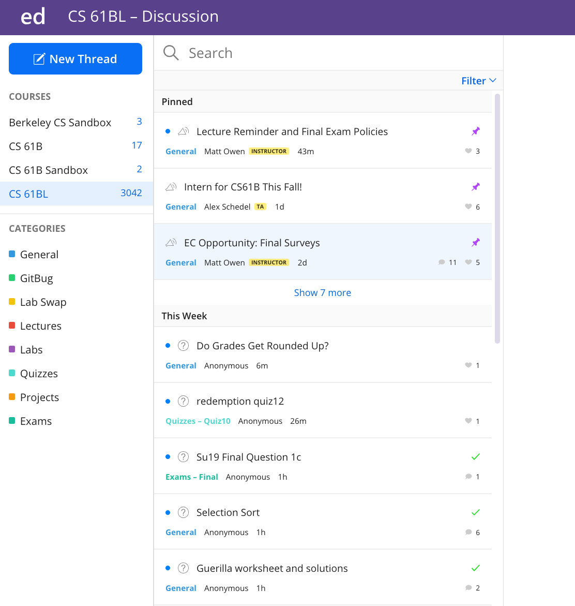
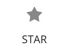
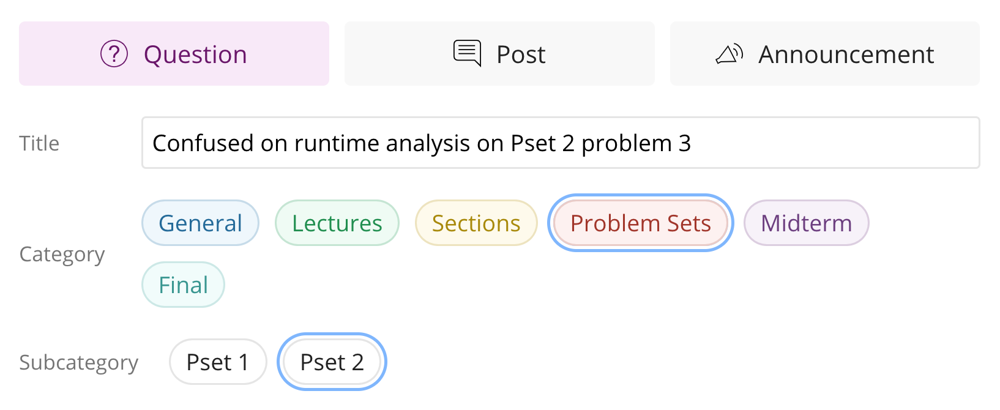
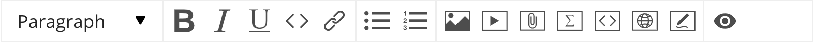
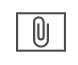
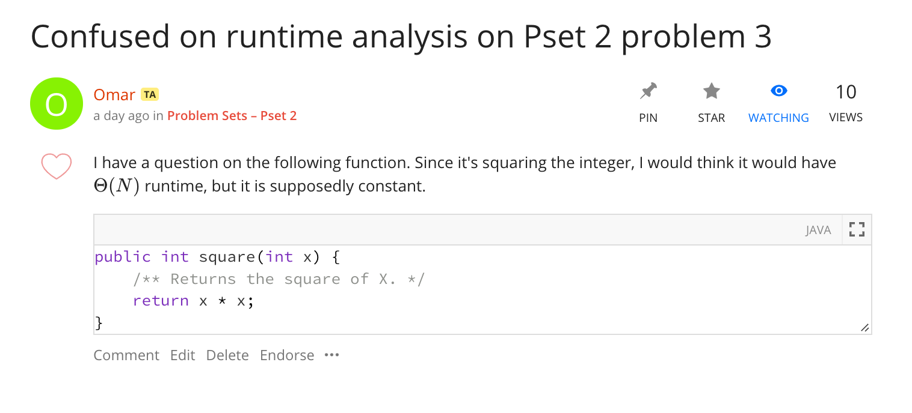
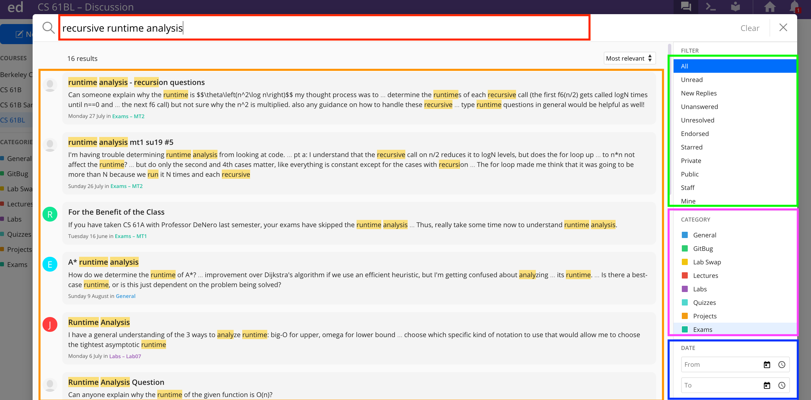

新用户 Ed 使用指南
这是为不熟悉课程论坛 Ed 的学生准备的指南。它将介绍如何有效地提问以及如何高效地搜索你需要的内容。
从高层次来看，Ed 是一个教育导向的论坛，允许你与其他学生异步协作并获得工作人员的指导。Ed 借鉴了 StackOverflow 的一些元素。对于不熟悉的人来说，StackOverflow 是一个公开论坛，人们在那里提问与编程和软件工程相关的问题。全职软件工程师经常使用这个平台来获得快速可靠的答案，所以你也应该可以放心使用！查看 这个 链接了解 StackOverflow 上发布的问题示例。现在让我们开始了解 Ed。
阅读完本指南后，你应该对 Ed 感到熟悉，并能够充分利用它。让我们深入了解 Ed 的具体内容。
登陆页面
当你第一次访问 Ed 时，你会在屏幕左侧看到很多帖子。所有重要的公告和索引帖子都会被 置顶 ，这样你就不需要花太多时间寻找它们。帖子左边的小蓝点意味着你还没有查看该帖子，所以如果你在置顶帖子旁边看到它，一定要仔细阅读。这是 CS 61BL 的登陆页面（课程的夏季版本）。

请记住，Ed 是我们之间的主要联系方式，所以确保你每天阅读它，并在截止日期前后特别注意，以防任何截止日期更改或我们有重要公告。
现在我们将深入了解 Ed 的具体工作方式，从问题开始。
问题
你可以通过点击左上角的蓝色"新建主题"按钮，然后选择你想创建的内容来创建问题或笔记（在 Ed 上称为"帖子"）。
这是 Ed 上一个未回答问题的样子：

你可以看到 Omar 发布了一个他需要帮助的问题。
在 Ed 中，主题下的后续回复有更多区分。如果我对这个问题有澄清，我可以评论这个问题。这 不是 回答问题，所以教师和 TA 仍然会看到该问题为未回答。你可以看到 Allyson 询问了 Omar 问题所在的工作表。
教师和课程工作人员可以推荐问题和回答。只有工作人员和教师可以推荐，所以你可以更有信心这个答案是正确的。如果你看到一个被推荐的问题，你可能想看看，因为它可能特别有见地！

回答

你可以看到 Akshit 回答了 Omar 的问题，甚至得到了他的回答被推荐、点赞，并有绿色的对勾。我们已经讨论过推荐，这只意味着教师或 TA 已验证此答案是可信赖的。每个人都可以点赞帖子、评论或回答，学生和工作人员都可以。你可以把点赞看作 +1 或感谢！
解决帖子
回答旁边的绿色对勾表示它已解决了问题。一个问题只能获得一个绿色对勾，所以它会给予帖子上最好的回答。
当工作人员回答问题时，它会自动标记为绿色对勾。发帖的人也可以切换对勾。
如果你在 Ed 上发布了一个问题，并从其他学生那里得到了回答，一定要用绿色对勾标记它！一些学生回答和我们的一样好！
另一方面，如果一个回答没有完全解决你的问题，请随时取消标记！工作人员在回答 Ed 问题时过滤未解决的帖子，这将允许你的问题再次被发现。
后续回复和评论
你也可以在回答上以层级形式创建后续回复。通过这些层级评论，追踪正在发生的事情并回答个人后续问题要容易得多。你可以看到 Omar 在 Akshit 的回答上提出了后续问题。
你可以使用"回复"来跟进嵌套的层级评论，或使用"评论"来启动不同的评论链。
图标说明
如果你感到困惑，这里是一个参考表。
| 图标 | 含义 |
|---|---|

|
只给予问题上的一个回答，通常是最好的回答。 |

|
仅由认为帖子/回答可信赖的 TA 或教师给予。 |

|
由学生或工作人员给予，不代表任何特别意义，但能让你感觉更好。 |

|
将此帖子设置为你观看的帖子。你将收到关于此帖子任何活动的电子邮件更新。 |
|
 |
在你的账户上收藏此帖子。允许你使用过滤器查看你收藏的帖子以便快速访问。你可以考虑收藏有用的帖子，以便轻松快速地找到它们。 |
在 Ed 上创建问题
现在我们已经讨论了如何"阅读"Ed 帖子，我们将讨论如何编写一个。
分类
分类有助于论坛保持有序。通过为你的帖子添加分类，你正在帮助 TA 更快找到你的帖子并回答，也帮助其他学生找到你的帖子并从答案中学习。
创建帖子时你要做的第一件事是选择正确的分类，如果适用的话，还要选择正确的子分类和子子分类。
这是我将询问关于 Pset（问题集）2 的问题的示例：

要仅查看特定分类、子分类或子子分类中的帖子，请点击左侧边栏中的分类。
元选项
如果你想匿名提问或让你的问题私有化（所有工作人员都可以看到），你可以在你的帖子下有一些选项。随意匿名提问。我们不鼓励提问私人问题，因为集体知识是有帮助的，但不会阻止你。
格式化选项
你可能已经注意到 Ed 上丰富的格式化选项。这包括添加图片、使用 markdown、使用 LaTeX 以及更传统的格式化如加粗/下划线。这使得问题更容易阅读，这使得你要问的内容更明显和清晰。这是所有格式化选项所在的工具栏：

这是描述如何使用每个格式化选项的表格。
| 图标 | 含义 |
|---|---|
| （注：原图片链接失效，此处为 Ed 编辑器中文本类型下拉菜单的截图。） | 选择此选项可获得不同文本类型的下拉菜单，包括代码。没有明确的 markdown 选项，只需像平常一样使用反引号 `。 |
| 这些是你典型的加粗、斜体和下划线选项。 | |

|
这是代码文本类型的快捷方式。与其使用这个，你应该使用交互式代码块。 |
| 你可以用这个在你的帖子中 超链接 文本。高亮你想超链接的单词或词组，点击这个按钮，然后粘贴链接。 | |
| 项目符号列表和编号列表。 | |
| 在帖子中插入图片。 | |
| 嵌入视频，你不应该需要这样做。 | |
|
 |
在帖子中附加文件，你不应该需要这样做。 |

|
点击此选项可将 LaTeX 格式的数学插入你的帖子。不幸的是，这会创建自己的行。幸运的是，如果你懂 LaTeX，你可以直接插入你的单个 $ 符号并使用它。如果你不懂，这真的很容易学，因为你可以在 LaTeX 中做的唯一事情就是简单的渐近分析。你可以在 20 分钟内学会这个。 |

|
插入一个交互式代码块。比普通代码块更好，因为有更好的语法高亮和自动大括号插入等功能，这对 Java 很好。语言（右侧）应该默认设置为 Java，但如果不是，请更改。你会看到"行号"和"可运行"的两个复选框。没有理由不显示行号，所以保持开启。可运行选项允许我们运行你的代码，但不幸的是它对 Java 真的不太好用（你需要用
main
定义一个类），所以取消勾选此框。
|
| 对这个课程没用。允许你显示基本的网站内容。 | |

|
你可以用这个画画。 |

|
用于预览你的帖子以确保所有花哨元素正确呈现。 |
在下面的示例中，你可以看到 Omar 询问了关于特定问题集中特定问题的内容，并正确分类了它。现在，将来，如果另一个学生在做 Pset 2 时有一些问题，他们可以简单地使用过滤器查看该子分类中的问题，而不必问重复的问题。

Ed 置顶帖
我们通常有非常长的线程（我们称之为"置顶帖"）来聚合特定主题的所有问题和澄清。置顶帖很好，因为你可以浏览其他学生对作业的问题，获得一个很好的"鸟瞰"视图，了解你的同学在哪些部分卡住了。每个作业都有一个置顶帖，因此关于该作业的所有问题都存在于一个地方，然后你可以使用浏览器的搜索（CMD + F）来找到更具体的内容。每个后续回复可以标记为
已解决
或
未解决
，以提醒 TA 需要回答问题。这样，你的问题不会丢失，我们总是知道置顶帖是否需要我们的关注。
在 CS61B 中，每个作业都会有一个置顶帖；你应该在那里发布关于作业的任何和所有问题。这些置顶帖将被密切关注，以确保所有问题都被回答，没有人的问题在与其他学生问题的海洋中"丢失"。
但我们要求你在提问之前 先搜索你的问题 ，以减少杂乱，使 Ed 对你的同学和 TA 尽可能有效。
这是 Ed 中置顶帖的样子：

你会看到顶级评论有一个特殊标志，显示
已解决
或
未解决
：这让 TA 知道该评论是否需要关注。
在你添加到现有评论后，将你的评论标记为
未解决
很重要，否则 TA 不会知道你希望回答该问题！
你可以通过点击
未解决
/
已解决
按钮将评论标记为
未解决
/
已解决
，这会将其标记为相反的状态。
要在此处添加新评论，只需在写着"添加评论"的文本框中输入内容：

你可以匿名提问：如果你这样做，你将获得一个匿名动物作为你的笔名（你可以看到有学生匿名提问，被冠以"Anonymous Okapi"的名字），我们可以在后续回复中引用你。
默认情况下，当你发布评论时，它会被标记为
未解决
。
我们会将置顶帖置顶，所以你可以在上面的"置顶帖子"部分找到它们。
你也可以对置顶帖上的评论进行排序：

如果你按"最佳"排序，你会按点赞数从多到少的顺序看到评论。这将帮助你找到你的同学在完成作业时认为最有帮助的评论。不要忘记为你觉得有帮助的评论点赞，以使这个排序更好！
如果你按"未解决"排序，你会先看到未解决的评论，然后是已解决的评论。这主要帮助 TA 回答所有需要关注的评论，但如果你喜欢帮助回答问题，我们非常欢迎你帮助我们：）
搜索
还记得我们说 Ed 搜索很棒吗？让我们来了解如何使用所有搜索功能以及良好的搜索策略。
这是良好搜索的结果的样子：

让我们来了解如何使用所有搜索功能以及良好的搜索策略：
使用关键词
这是上图红色（左上）框。Ed 搜索很像 Google 搜索。如果你有一个关于如何做递归运行时间分析的一般性问题，你可以搜索"如何计算递归函数的运行时间？"。相反，你也可以搜索这个格式良好问题中的关键词，所以像"递归运行时间分析"这样的东西，会给你更好的结果。当你写一个格式良好的问题时，Google 实际上会为你提取关键词。虽然我们不能将自然语言问题输入 Ed，但给定正确的关键词，它确实做得很好。Ed 不仅可以搜索帖子/问题标题，还可以搜索到子评论级别。当你输入新帖子标题时，它还会根据你输入的内容显示相关帖子。一定要看看它们，因为你脑海中的问题可能已经被提出过！
接下来的两个功能肯定会帮助你搜索，但通常正确的关键词会让正确的帖子跳到搜索结果顶部。
搜索过滤器
这是上图绿色（右上）框。
如果你正在寻找一个有可信答案的问题，你可能想要过滤仅推荐帖子。这会将你的搜索限制在已被工作人员推荐的帖子上。同样，如果你是一个有帮助的学生，喜欢回答其他学生的问题，你可以搜索未回答或未解决的问题并帮助他们。先感谢你！
搜索分类
这是上图紫色（中右）框。
如前所述，你可以将搜索限制为仅特定分类中的帖子。所以如果在期中考试 1 上有一个关于继承的问题，你可以将搜索过滤到该子分类的帖子。
搜索日期范围
这是上图蓝色（右下）框。
你也可以指定要搜索的日期范围。没那么有用，但如果需要它，它就在那里。
结语
这个指南可以让你知道 Ed 提供了什么，但最好的学习方法就是使用它！记住保持 Ed 礼仪，这样所有学生都能从你们提出的精彩问题中受益：）
Ed 有一些官方资源，是本页面所涵盖内容的子集：